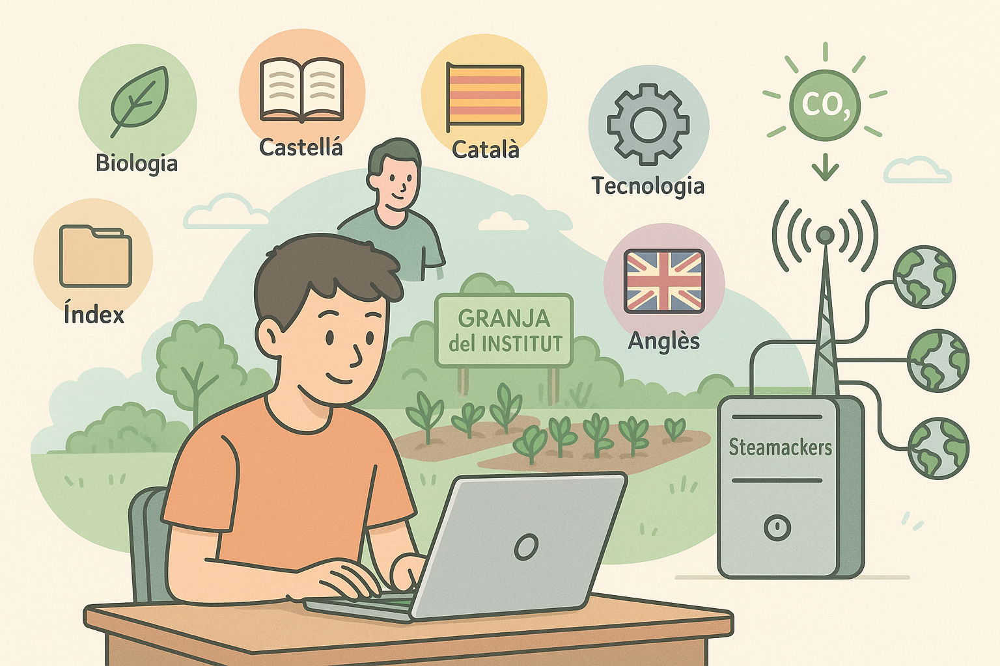

Today I finished programming the essentials for my website. I have added Biology, Spanish, Catalan, Technology, Index, English, and I have updated everything that was pending. I also added the image for Biology, which uses little carbon dioxide and has low energy consumption. Yesterday Jordi taught me everything I needed to start my website. Later I will create my farm, that is, we will use the school garden, and then, if we have time, we can create a server with the Steamackers, which will be connected to the school's Wi-Fi. And if I can choose, I will connect as many AIs as possible so they can give me answers from anywhere in the world, for what purpose, I don't really know.

Day 2
Today I tested the temperature sensor that is next to the humidity one, meaning they are all-in-one. Then I used the soil moisture meter which wasn't working; it was showing zero all the time. Also, the light detector; we will use the humidity sensor to see if the plants need water to activate the water pump to irrigate them, logically, right? I'll probably try other moisture sensors and we will finish testing everything and we will test the LoRa transmitter that will send us information every 1 or 3 minutes according to Spanish law.
Day 3
Today we tried to program the LoRa with the boards but it was a mess because we don't know it, we will know tomorrow barely how to transfer the data from the garden to the base plate which will be placed automatically from JSON, so we automate it, we will place an external battery and if we can we will place solar panels because the LoRa can only send information every 2-5 minutes due to Spanish law. To be honest, I feel lazy to place everything I do every day because I'm very sleepy.